Glance: a gaze based biometric and multimodal system
Biometric Systems & Multimodal Interaction
2018-2019
2018-2019
Emiliano Luci
1665528
1665528
Introduction
- Sight is one of the predominant way we acquire information about our surroundings
- Our eyes are extremely well adapted to acquire images in the visible part of the spectrum, thanks to the cones, a specialized type of photoreceptor
- However only a small area of the retina is densely packed with cones, the fovea centralis
Introduction (1)
-
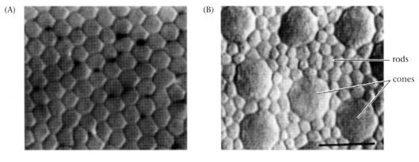
- The image shows cross sections of a human retina respectively in the fovea (A) and the peripheral region (B)
- Also notice the nice scutoidal arrangment of the cells isn't it neat?
Introduction (2)
- But we do not see the world as a coloured spot so what gives?
- The eyes are constantly moving to compose a patchwork of detailed images by further processing in the brain
- These small movements are called saccades because the movement is a very quick jerk between fixation points
Introduction (3)
-
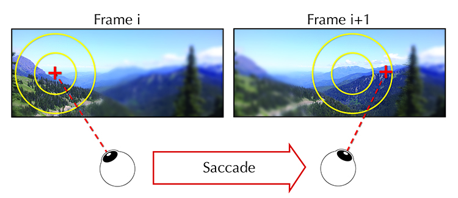
- This is very useful if we're desperately trying to achieve those sweet FPS since we only need to render at full resolution the part of the images that we're currently looking at
Gaze Tracking
- Tracking the eyes is essential for the aforementioned case and can be useful in plethora of other settings
- Analysing the way we carry out visual tasks can help us better design the task itself or the technology built around it
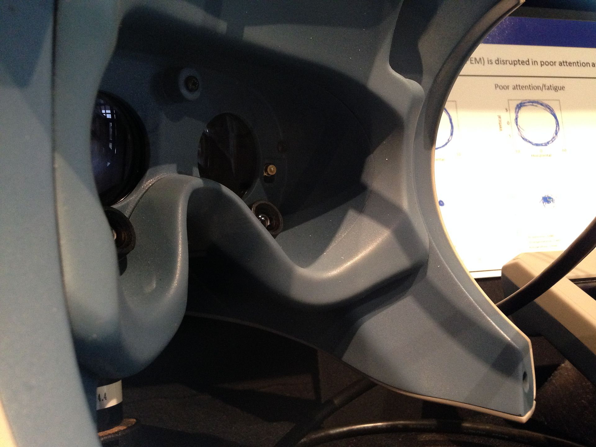
An Example from the Past
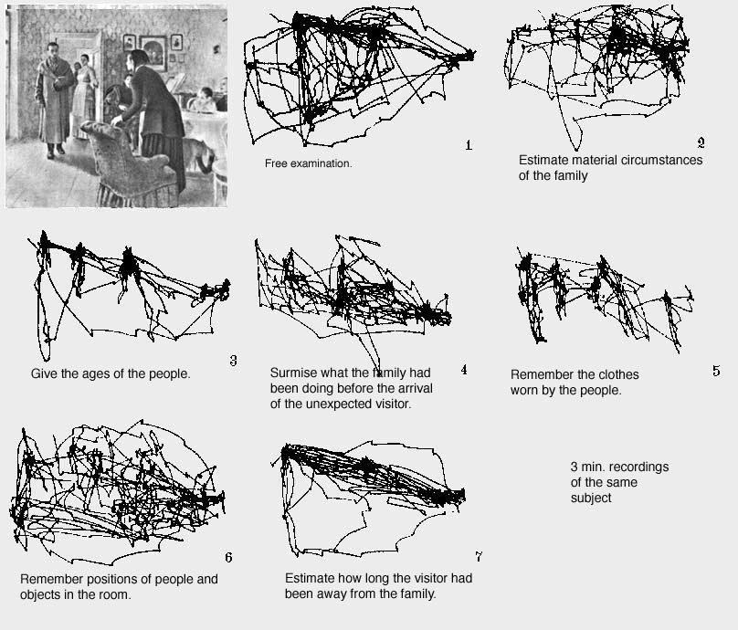
An Example from the Present
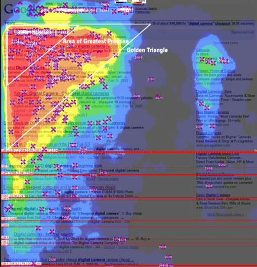
An Example from the Present (1)
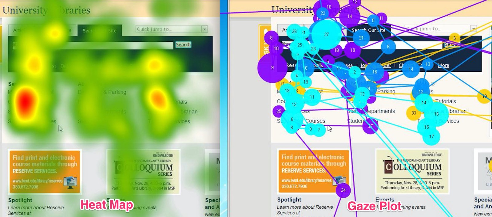
Behavioral biometrics
- Clearly there are lots of similarities in the way people perform a visual task. Possibly some of them are hard wired ( the way we scan a face for example ).
- However the scan patterns of people are still unique to them.
- Furthermore we can hypothize that cultural upbringing introduces biases in the way some tasks are carried on. E.g. : reading some text written in a different language not using a latin script.
Behavioral biometrics (1)
- The question we tried to answer is: can we design a task that is:
- Simple : every normal sighted person can perform it
- Unobtrusive : it should be carried out in normal conditions
- Reproducible : the result should stay consistent though time
Glance
- Glance is an attempt at designing such a task
- It exploits the way people look at familiar faces vs random images, extrapolating from faces to familiar images in general
- We will see how it works and well it performs
Glance (1)
- Glance is built on top of Unreal Engine
- Mainly for code organization purposes, but also for design reasons
- Eye tracking has a deep connection with VR

Glance (2)
- How do you design a program that is meant to be used in a virtual environment ?
- Do you just place a 2D UI in a 3D world or try to build it in a deeply different way?
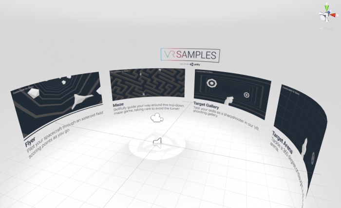
Architectural Schema
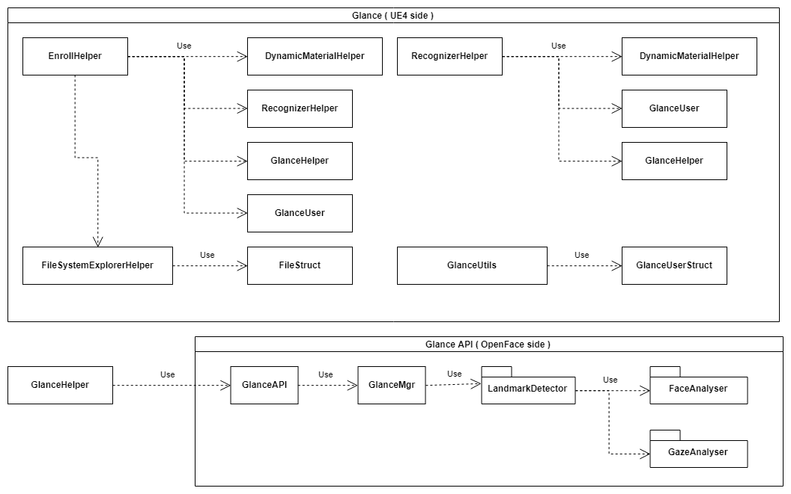
Camera Tracking
- Since we're stuck with a screen and a cheap camera how do we perform gaze tracking?
- Like many other computer vision problems, turns out that well trained neural networks are extremely good at them.
- The OpenFace framework uses a trained CNN to get landmarks that gives us the pose, face, and gaze vectors of a person, all from a 2D image!
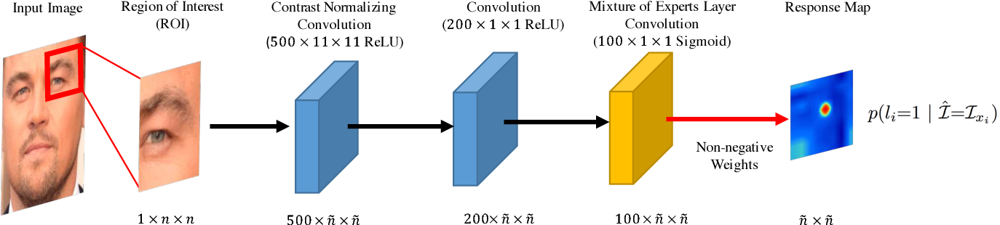
Calibration
- In order to get a better idea of where the user is actually looking we can go through a calibration process
- The calibration splits the screen into quadrants in order to narrow down the error to the quadrant instead of the whole screen
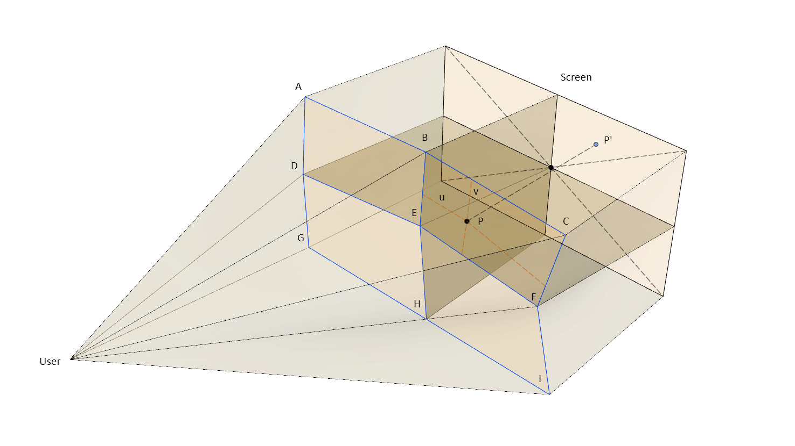
The Task
- The task that we designed builds a trace of the user gaze during the enrolment that will be used later as a template for the verification process. We do not perform identification with this!
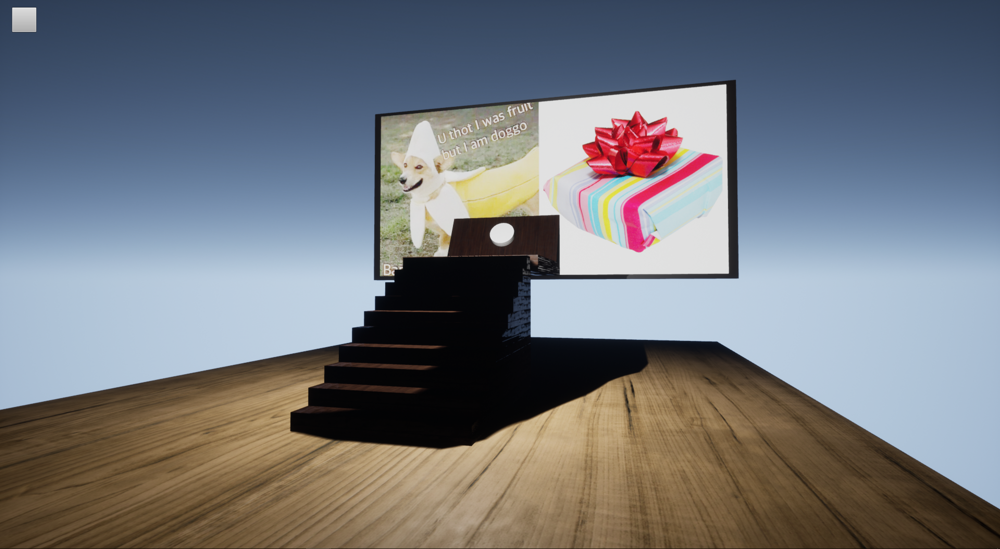
The Task (1)
- The enrolment is made up of 3 phases:
- Image selection
- Trace Recording
- Face Pictures Capture
- The User must first select 5 images that they deem familiar, i.e., they can recognize at a glance (ba dum tss)
- The system then start a slideshow of the user images next to neutral images, the relative positions are random
The Task (2)
- The system traces the user gaze during the slideshow building a list of vectors of the gaze yaw and pitch
- This corresponds to our feature vectors
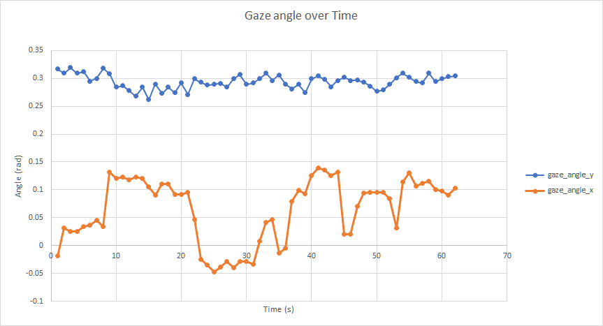
The Task (3)
- Finally the system collects picture of the user's face. This pictures are used to make the identity claim
- We use LBPH for face recognition, using the contrib module Face from OpenCV
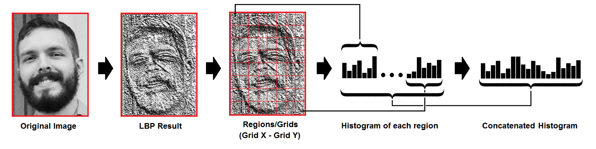
Identification and verification
- The identification process is carried out by the LBPH Face Recognizer. The output is the user and the ocnfidence of the prediction
- We take the confidence and, a bit wastefully, throw it away. That's ok, a user that passed the first phase still has to back up their claim during the verification phase!
- We could probably exclude some users a priori using just this score but that's not the purpose of what we're testing.
- Still some form of multibiometric would make sense in this case
Identification and verification (1)
- Now the user is shown the same slideshow that their claimed identity went through during the enrolment
- If the user is who they claim to be they will probably (they do) produce a trace that is similar enough to the template we are testing against
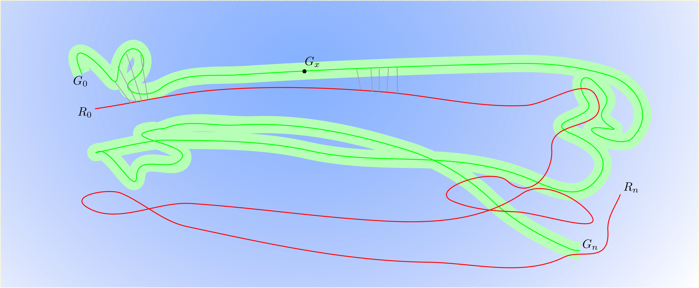
Identification and verification (2)
- So now we have 2 lists of timestamped 2D vectors, we need some sort of similarity score between them, that is we need a distance function in the space of $n\times2$ matrices
- A natural way would be just summing the element wise distance. This is bad. We thus utilise Dynamic Time Warping to get rid of scale and translational differences.
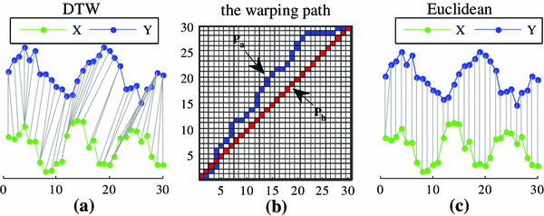
Results
- So it this system good? Unfortunately we didn't have nearly enough test subjects to draw conclusive results but we can still report what we found
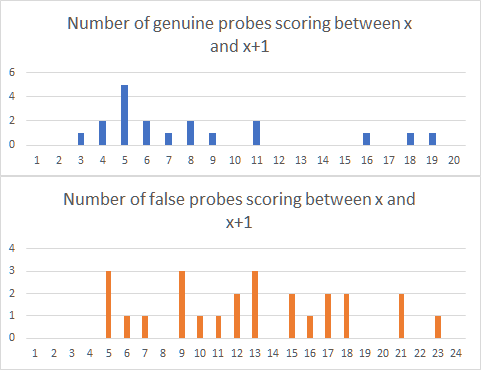
Results (1)
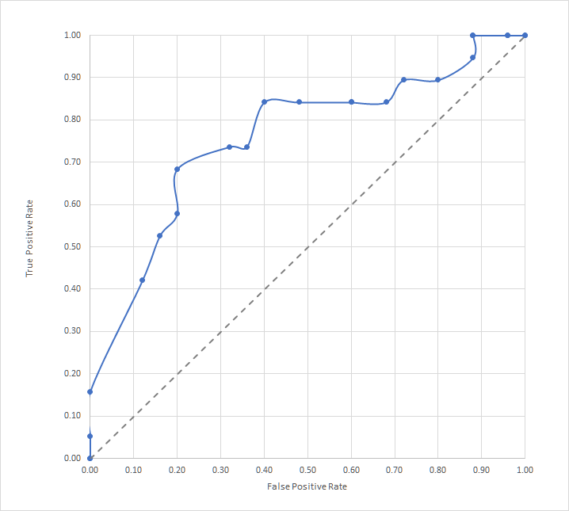
Results (1)
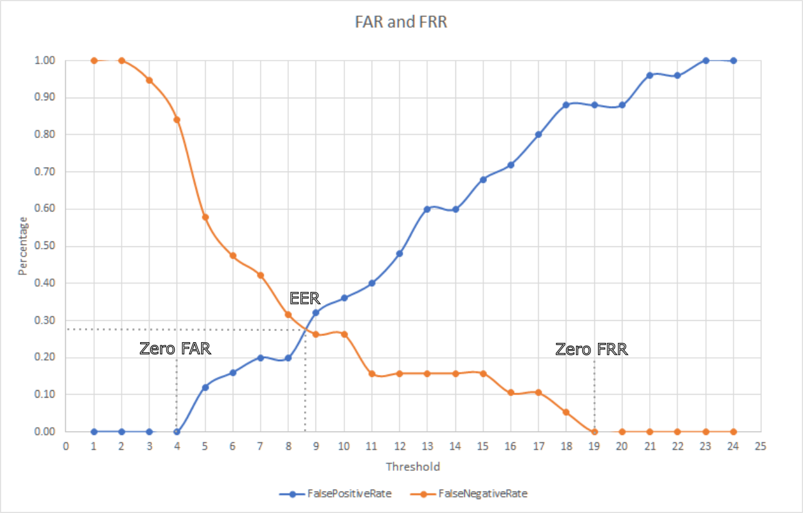
The Game
- It makes sense that one's gaze can be used as an input device.
- Sometimes "makes sense" is not enough though.

The Game (1)
- The previous screenshot shows how we can use the gaze to get what the user is looking at in a first person game
- We can use this information in a variety of way: highliting in game obejct, aiming, special interaction etc.
- However we are subject to some strict restrictions
The Game (2)
- In particular
- The gaze vector must not bounce around
- The update rate must be fast enough
- ( Optional ) Performing gaze tracking should be computationally cheap
- Some of these problems can be solved for others we must perform a tradeoff
- In any case the raw data must be subject to some kind of filtering since it is extremely jittery and we don't want our users to get a headache since we're not malicious
The (Other) Game
- We fell back on a simpler game to implement which still uses the gaze as an input to control the yaw of a cannon
- The aim is to shoot down ships going around the map. A simple counter keeps tracks of the score

The Ships AI
- The ships are controlled by the AI using a Bug Pathfinding algorithm
- This is not an optimal algorithm of course but it is reasonable for when we don't have a priori knowledge of the environment we are moving through.
- This class of algorithms is used for example for terrestrial rovers
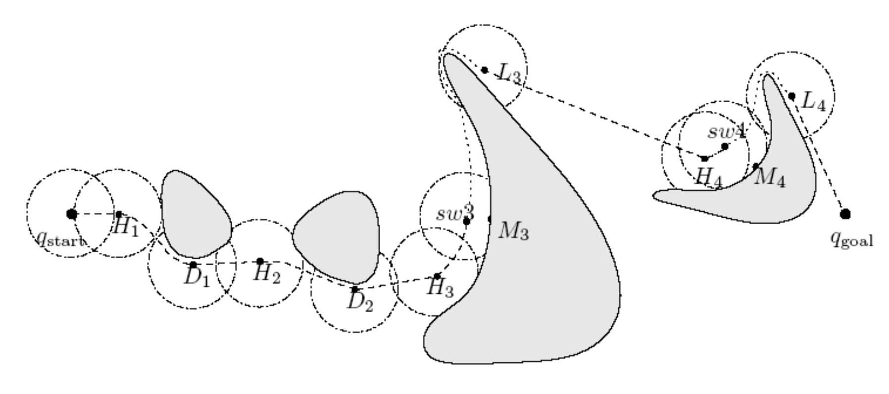
Projectile Selection
- The user can select the cannon ball to use by pressing a key and looking at the type of projectile they want
- The screen is only split in 4 because quadrant selection is less subject to errors.
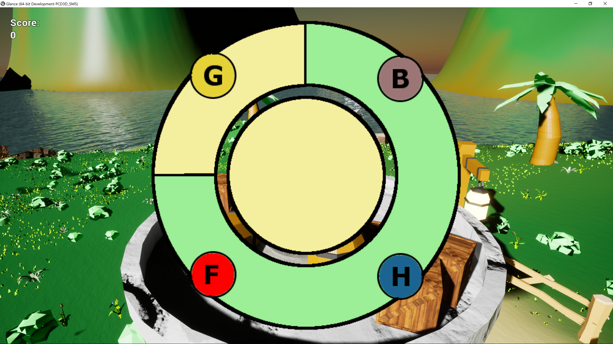
The End